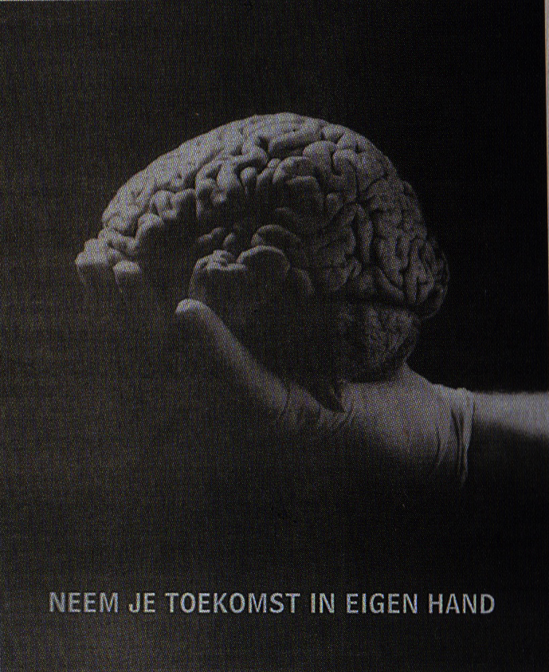
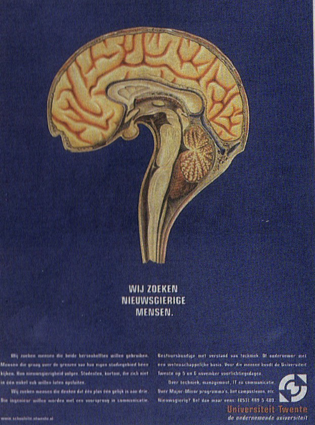
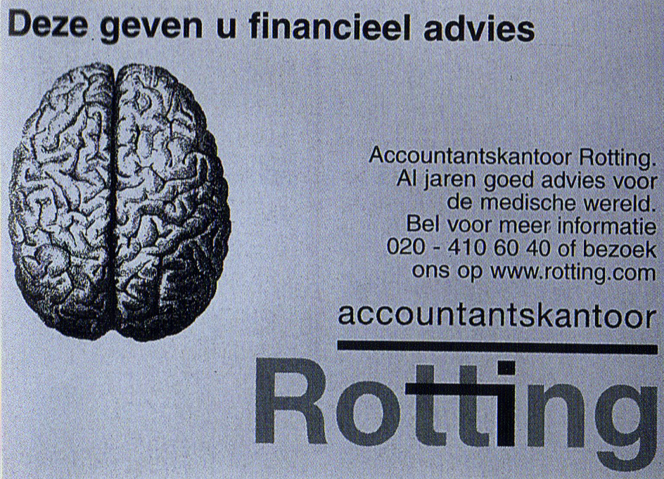

Het brein als verbeeldend medium
.
Hoofdstuk 3
- 3.1 Verbeelding van het brein na de Tweede Wereldoorlog
- 3.2 The decate of the brain
- 3.3 Hogere vorm van taalgebruik
- 3.4 Het brein als creatief medium
Het brein is in de huidige media mateloos populair. Het is multifunctioneel maar ook fotogeniek. Fotogeniek? Ja fotogeniek. Een impressie wordt gegeven van de manieren waarop de hersenen in tal van media worden afgebeeld om een boodschap op een groter publiek sterk over te brengen. Er wordt getoond hoeveel zeggingskracht ze hebben. Wat we alleen niet mogen vergeten, dat dit alles nooit het licht zou hebben gezien zonder de veelzijdigheid van het brein van en door de geïnspireerde bedenker van het beeld. Het was vroeger best een gewaagde actie om het brein te gebruiken om een boodschap te geven. Dit omdat er bij lange na niet zoveel bekend was over de hersenen als dat nu wel het geval is.
3.1 Verbeelding van het brein na de Tweede Wereldoorlog
Het moge duidelijk zijn dat de artistieke verbeelding van de hersenen in diverse uitingen pas na de Tweede Wereld-oorlog een rol zijn gaan spelen in het symbolische woord- en beeldgebruik. Aan het eind van de negentiende eeuw ontstond er in de wetenschappelijke wereld een algemene gelijke mening over de bouw en functie van ons zenuwstelstel. Hierdoor kon pas na 1900 een verbale en picturale symboliek ontstaan, waarbij de hersenen de rol van betekenisverlener toebedeeld kregen en overdrachtelijke vergelijkingen met betrekking tot de hersenfunctie mogelijk werden. Je zou de ontwikkeling kunnen opsplitsen in twee dingen:
- Als het brein verduidelijkt moet worden, dus de functies conceptueel verhelderd moeten worden, dan wordt het praktisch altijd een fysieke symboliek of vergelijking als betekenisverlener gebruikt.
- Of zodra de hersenen betekenisverlener zijn, dan worden deze altijd in een bovennatuurlijke zin gebruikt. Het andere object in dit type vergelijking krijgt dan als het ware een soort overwaardering, terwijl in het eerste geval dit object inhoudelijk ondergewaardeerd wordt.
3.2 The decate of the brain
Het brein is in de huidige media mateloos populair. Het is multifunctioneel maar ook fotogeniek. Fotogeniek? Ja fotogeniek. Een impressie wordt gegeven van de manieren waarop de hersenen in tal van media worden afgebeeld om een boodschap op een groter publiek sterk over te brengen. Er wordt getoond hoeveel zeggingskracht ze hebben. Wat we alleen niet mogen vergeten, dat dit alles nooit het licht zou hebben gezien zonder de veelzijdigheid van het brein van en door de geïnspireerde bedenker van het beeld. Het was vroeger best een gewaagde actie om het brein te gebruiken om een boodschap te geven. Dit omdat er bij lange na niet zoveel bekend was over de hersenen als dat nu wel het geval is. Afbeelding 1: ‘Neem je toekomst in eigen hand’. Advertentie UL, NRC Handelsblad 30-06-1999
Afbeelding 2: Wij zoeken nieuwsgierige mensen’. Universiteit Twente. NRC Handelsblad 11-10-199
Afbeelding 3: ‘Deze geven u financieel advies’. Accountantskantoor Rotting, NRC Handelsblad 4-12-1999
Tegenwoordig gebruiken we bijna alleen maar vergelijkingen om, het maakt niet uit waar het om gaat, datgeen te verduidelijken. Ik betrap mezelf er ook op dat ik bijna altijd een vergelijking gebruik om tot iets te komen, al heb ik het niet altijd nodig. Het is hetzelfde als dat mensen mij vragen waarom ik voor een Apple kies in plaats van Windows. Dan reageer ik altijd met ‘waarom zou je eerder een BMW willen dan een volkswagen?’. Dan kijken ze me raar aan omdat ze die vraag niet aan zagen komen. Vaak willen ze zeggen dat dat niet hetzelfde is maar dat is onzin. Nu is het wel zo dat een vergelijkende betekenisverlener niet uitgelegd kan worden door een affiche of andere uiting waar het voor gebruikt wordt. Dit betekend dat je als ontwerper goed moet nadenken of hetgeen wat je gebruikt, in dit geval het brein, duidelijk en krachtig genoeg is.
3.3 Hogere vorm van taalgebruik
Diverse kunstenaars hebben metaforische beelden gebruikt om hun visie op het brein en de wereld te verbeelden. Juist voor een metafoor geldt, dat één beeld meer kan zeggen dan duizend woorden. Ik heb een paar voorbeelden opgezocht die een veel grotere symbolische lading hebben dan je in eerste instantie misschien denkt. Het eerste voorbeeld is de poster voor de negentiende Europese neuroradiologie congres (afb. 4), het heeft een hoogwaardig technische specialisme als de neuroradiologie gebruik maakt van historische iconografie. Bij deze poster refereren de hersenen naar het uurwerk van het klokgebouw die er naast staat. Met het idee dat je aan het denken wordt gezet en je hersenen een kostbaar bezit zijn. De afgebeelde persoon is Philips van Bourgondië . De poster van de ‘Behavioral and Cognitive Neurosciences’ (afb. 5) Instituut in Groningen (BCN), waarbij een ladekast een menselijk lichaam verbeeldt, heeft wat de symboliek van het brein betreft, wel een wat naïeve voorstelling van zaken door alleen maar naar geheugen-functies te verwijzen. Wat op zich natuurlijk wel interessant is, maar het brein is veel meer dan alleen het geheugen. Je brein is je alles. Nu is je lichaam, in dit geval een ladekast, gevangen in zijn/haar bewegingen. Ik bedoel, als mens zijnde kan je alle kanten op met je lichaam en nu middels dit affiche wordt je gevangen genomen in je eigen lichaam. Dit lijkt mij natuurlijk niet de bedoeling maar dat wekt bij mij wel diverse vragen op in tegenstelling tot de boodschap die ze willen vertellen.

Afbeelding 4: Poster voor de 19e Europese neuroradiologie congres, Brugge 1993

Afbeelding 5: Poster van BCN Summerschool juni 1999
Een ander interessant voorbeeld van wat we nu tegenwoordig ook steeds meer tegen komen is de poster van afbeelding 6. Hier staat een geneesmiddel tegen de ziekte van Parkinson afgebeeld, waarbij met een meetlint de vormen van beide hersenhelften verbeeld worden. Het onderschrift: ‘Een meetbaar voordeel’ moet de boodschap van een makkelijk en tevens goed voorspelbare dosering overbrengen. Ik zou het zelf niet direct koppelen aan alzheimer zonder dat ik de betekenis ervan zou weten. Ik zou eerder denken aan het feit dat de hersenen, in onze ogen, een klein iets is ten aanzien van ons menselijk lichaam maar dat de hersenen wel van enorme kostbare waarde is. Dat de omvang van de hersenen groter zijn dan wij denken. We kennen allemaal wel de affiches voor het stoppen met roken. Tijdens mijn zoektocht naar interessante voorbeelden stuitte ik op een cover van een medisch blad (afb. 7). De suggestie van de sigaretten-peukjes, die tezamen de windingen van de hersenen voor-stellen, is een directe dubbele boodschap. Het is zo-wel de gedachten aan verslaving, als roken is slecht die worden opgeroepen, wat zal leiden tot degeneratie van intellectuele en cognitieve functies. Eenander voorbeeld is de poster op afbeelding 8. Hier heeft de kunstenaar het thema van een symposium over dwang gesymboliseerd door het onontkoombare karakter van dwang te verbeelden met zo’n vijftien vingers verstrengeld als een hersenbol. In deze vijf genoemde voorbeelden zijn de hersenen slechts als vorm aangegeven, de invulling geeft de betekenis aan die dit voor de hersenfunctie kan hebben. Het brein is slechts de ontvanger van de boodschap.

Afbeelding 6: ‘Een meetbaar voordeel’, betreft DA-agonist Almirid. Wissenschaftliche Produkinformation. Dessin Arzneimittel GmbH, Hamburg

Afbeelding 7: Roken, omslag bam Medisch Contact 20 juni 1987

Afbeelding 8: ‘Dwang’, Herkenning en behandeling van dwangstoornissen in de huisartsenpraktijk. Voor een Ciba-Geigy Symposium, Jaarbeurs Congrescentrum Utrecht, maart 1991.
3.4 Het brein als creatief medium
Het zal iedereen duidelijk zijn dat het heel moeilijk is om termen als overeenkomsten, iconen, symbolen, vergelijkingen, analogieën en metaforen scherp te definiëren en van elkaar af te grenzen. Er bestaan tussen de termen vloeiende overgangen, alhoewel een zekere hiërarchie ook wel weer is aan te brengen. De termen hebben in ieder geval gemeen dat ze alle de bedoeling hebben om te verduidelijken, uit te leggen, om een statement te maken. Creativiteit speelt daarbij een grote rol, voorbij bij hogere graden van abstractie, zoals de metafoor. Ik heb een leuk voorbeeld gevonden waarbij de hersenen een veel grotere symbolische betekenis hebben, van wederzijdse en betekenisvolle overdrachtelijkheid, of ook wel een echte metafoor. Het betreft hier een kerstpostzegel (afb. 9). Twaalf studenten van het Sandberg-instituut ontwierpen in 1997 kerstpostzegels. Gekozen werd het ontwerp van de in Duitsland geboren Julia Kaiser . De overlap van twee hoofden bevat de kerstgedachten aan elkaar, de wederzijdse gevoelens en de gemeenschappelijke herinneringen. Ratio en cognitie gelukkig en tegelijkertijd samen in de schedel. Het is hier de reminiscentie die aanwezig is aan de oude strijd tussen verschillende opvattingen over de ziel. Je mag je afvragen of het symbool van het hart voor emotionaliteit en onbaatzuchtigheid ooit uit ons taalgebruik zal verdwijnen.